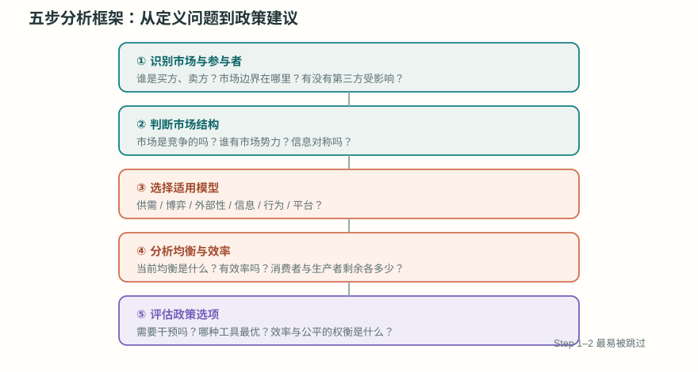
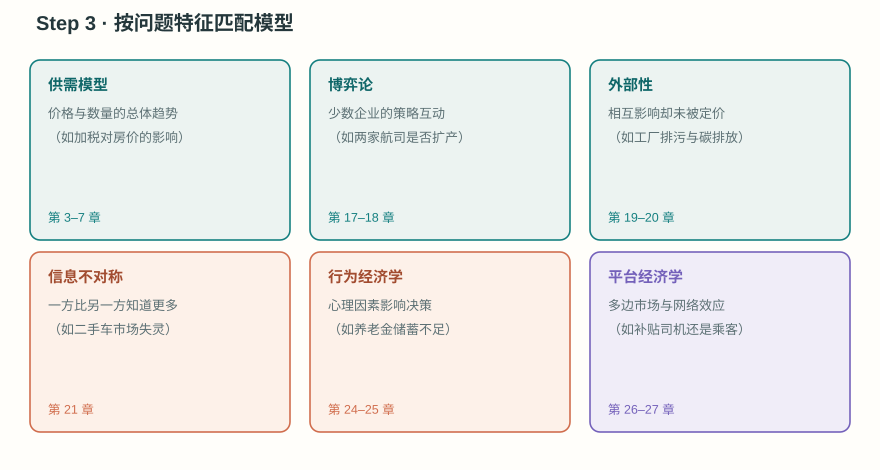

CHAPTER 28 · MICROECONOMICS
综合实战：微观经济学分析框架
把前面各章的工具整合成一套可复用的流程：定义市场、判断结构、选择模型、分析均衡与效率、评估政策。核心是先定义问题，再解题。
工具多不等于会用
28 章下来，你已经有了一整箱工具：机会成本与比较优势、供需与弹性、效用与成本、市场结构与博弈、外部性与信息不对称、行为经济学与平台经济学。
但现实问题不会贴标签告诉你“这是外部性，请用科斯定理”。它们往往混合了多方利益与多种失灵。本章给出一套可复用的流程，教你从定义问题开始，而不是一上来就选模型。
五步分析框架
不管面对什么问题，先走这五步：
- 识别市场与参与者：谁是买方、卖方？市场边界在哪里？有没有第三方受影响？
- 判断市场结构：竞争还是垄断？谁有市场势力？信息对称吗？
- 选择适用模型：供需、博弈、外部性、信息、行为还是平台？
- 分析均衡与效率：当前均衡是什么？有效率吗？消费者与生产者剩余各多少？
- 评估政策选项：需要干预吗？哪种工具最优？效率与公平的权衡是什么？

最容易跳过的正是第 1、2 步。市场边界没搞清楚就直接选模型，后面的分析会全部作废。把最多时间花在“定义问题”，而不是“解决问题”上。
按问题特征选模型
第 3 步最容易让人困惑。判断标准不是“哪个模型我熟”，而是问题的特征：涉及价格与数量的总体趋势用供需模型；涉及少数企业的策略互动用博弈论；涉及未被定价的相互影响用外部性分析；涉及一方知道更多用信息不对称；涉及心理因素用行为经济学；涉及多边平台与网络效应用平台经济学。

很多现实问题需要组合使用多个模型。以碳排放为例：它首先是外部性问题，但分析各国减排承诺时要用博弈论（全球谈判是典型的囚徒困境），讨论“洁净空气”时又要用公共品理论。好的分析能在同一框架里切换模型，但不会为了显得全面而堆砌。
完整演练：一项税收政策
用前七章的同一组市场来做演练（与第 7 章一致）：需求 Qd=120−2P，供给 Qs=20+3P。逐步走五步。
Step 1 识别市场：买方与卖方在国内市场上交易同一种商品；政府对每单位征税 t。若没有外部性，税收会带来效率损失；若存在未被定价的负外部性，税收可以纠正扭曲。Step 2 市场结构：买卖方众多、都是价格接受者，用竞争性供需模型。Step 3 选模型：供需模型 + 税收归宿。
Step 4 均衡与效率：无税时令 Qd=Qs，得 P=20、Q=80。税后设 Pc=Pp+t，可得：
Pc=20+12=32，Pp=20−8=12，Q=80−24=56。税收收入 =tQ=20×56=1120；无谓损失 =0.6t²=0.6×400=240。消费者剩余 ≈½×(60−32)×56=784，生产者剩余 ≈½×(12+6.67)×56≈523。三者相加约为 2427，比无税时的总剩余 2667 少了约 240，正好等于无谓损失。
Step 5 政策选项：若目标只是筹资，税收可行但要承担效率损失；若恰好存在每单位为 20 的负外部性，同样的税可使产量回到社会最优，把“无谓损失”变成对外部损害的纠正。同一工具，在不同设定下评价完全不同——这就是为什么要先做 Step 1。
交互实验：均衡、剩余与无谓损失
税收如何改变福利分解
沿用上面的市场 Qd=120−2P、Qs=20+3P。拖动滑块改变每单位税 t，观察买方价、卖方净价、成交量，以及消费者剩余、生产者剩余、税收收入与无谓损失。
Pc=20+0.6t，Pp=20−0.4t，Q=80−1.2t；CS=½(60−Pc)Q，PS=½(Pp+20/3)Q，收入=tQ，DWL=0.6t²。均为教学示例。
与 t=0 相比，t=20 时消费者剩余加生产者剩余加税收收入的总和差多少？这个差额去了哪里？
查看答案
t=0 时总剩余约为 2667；t=20 时三者之和约为 2427，少了约 240，恰好等于无谓损失 0.6t²=240。这部分剩余既没有被买方、卖方得到，也没有成为政府收入，而是因交易量从 80 降到 56 而彻底消失。
如何写一篇经济学分析
框架走完，还要能写清楚。标准结构大致是：问题陈述 → 背景与市场描述 → 理论框架 → 分析 → 政策或策略建议 → 结论与局限。
- 问题陈述：一句话说清分析什么、为什么重要。
- 理论框架：选了哪个模型、为何适用、关键假设是什么。
- 分析：用模型推导预测或解释现状，用图表与数值支撑。
- 建议：1–3 条具体建议，各自的效果与可能副作用。
- 结论：总结发现，并说明局限。
写作上要克制：只选对问题最关键的那个模型，把逻辑讲透，胜过堆砌五个模型却每个都浅尝辄止。如无必要，勿增实体。
局限与结语
这套框架也有边界：市场界定依赖判断，模型依赖假设，剩余与效率的度量回避了分配问题，真实政策还要面对政治可行性与信息约束。经济分析给出的是有条件的结论，不是万能答案。
但它的价值在于：把混乱的问题拆成可讨论的部分，把“我觉得”换成“在什么假设下、谁会受益、谁会受损”。这种思维方式，比任何单个模型都更持久。
- 看到价格，先问供需与剩余，而不是“贵或便宜”。
- 看到少数企业互动，先想博弈与均衡。
- 看到新政策，先问激励、赢家与输家、效率与公平的权衡。
微观经济学不是一堆图表与方程，而是一副让你看清世界运行逻辑的眼镜。
引用文献与适用范围
本章数值（Qd=120−2P、Qs=20+3P、P=20、Q=80，以及 t=20 时的剩余分解）为教学示例，与第 7 章保持一致，不是观测数据。分析方法参考：
- OpenStax · Principles of Microeconomics 3e（教材首页）
- OpenStax · Principles of Microeconomics 3e, Ch. 3: Demand and Supply
- 本课程第 1—27 章：五步框架是本章对前述模型的整合性总结，未引入新的计量结果。
本章不对任何具体国家或行业给出政策建议；真实评估需结合数据、制度与分配目标，不能直接套用教学示例。